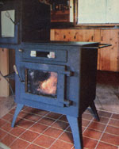
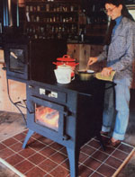
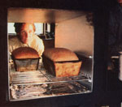

The Kroupa Stove
It is now feasible to cook your food, heat your home and warm your water (efficiently) with the same woodburner, including how, a necessity invention, cooking, water heating and approaching furniture.
By the Mother Earth News editors
January/February 1981
It's now feasible to cook your food, heat your home, and warm your water (efficiently!) with the same woodburner.
Until recently, it wasn't considered possible to combine efficient space heating and thorough cooking capabilities in the same woodburning appliance. The quick, hot fires associated with the small fireboxes common to most cookstoves just aren't compatible with large-bodied, draft-regulated, slow-burning, airtight heaters. Without question, cookstoves do provide radiant heat and airtights can be used for cooking .. . but each is designed to perform a specific task, and does so at the expense of the complementary function.
Well, as any regular reader of this magazine is aware, we're not in the habit of heralding the arrival of every interesting new product . . . but if an invention comes along that seems to be innovative enough to set conventional wisdom by the wayside, we think you should know about it. So when tall, red-headed Gene Kroupa gave us a demonstration of the woodstove he'd recently completed, we jumped at the chance to feature it in these pages. Why? Because the Kroupa Stove not only combines efficient and convenient cooking and heating capabilities in the same appliance . . . it even allows you the option of setting up the heater to warm your water, as well.
A "NECESSITY" INVENTION
The inventor didn't intend to get into the woodstove business when he began assembling his prototype three and a half years ago. Rather, Mr. Kroupa had a more immediate goal: He needed a woodburner to heat his just-completed home, cook his food, and warm his water . . . all in the demanding climate of Nova Scotia. And, after three years of studying burn patterns, testing ideas, and making innumerable improvements on three different versions, Gene finished the woodstove he'd set out to build. What's more, he realized that he'd invented a truly versatile appliance . . . one that other people just might want to buy!
HOW?
Essentially, the Kroupa Stove is three woodstoves connected by a precise and intricate (but easily controllable) set of baffles. The base of the unit is a 17"X 23", airtight, 1/4" steel, brick-lined firebox ... equipped with an adjustable, preheated primary draft (which introduces combustion air at the front or back of the firebox) plus a Vycor brand (it's rated to handle temperatures of 2000°F) self-cleaning glass window in its door. Directly above the 9" X 15" firebox opening are a pair of sliding metal shutters-with chrome wire handles for barehanded operation-which monitor the draft for the entire stove. And directly on the back (cooking) side of the woodburner (see the illustration) are two push/pull knobs that regulate the direction that inflow will take.
With both knobs pushed in, for example, air flows through a preheating channel above the fire and then down the back of the firebox to an inlet located about 10 inches above the stove's bottom. When the baffles are set in this manner, a hot fire works its way down the length of the logs and toward the firebox door.
The smoke is routed in one of two directions: When the rotating baffle located to the right of the draft opening is in its normal closed position, exhaust gases rise through a grate at the left side of the firebox and flow immediately beneath the 5/16"-thick, 18" X 22" cooking surface. The hot smoke is then divided to flow evenly through the 2"-wide passages that surround the baking oven, and recombines to exit through the 8"-flue. However, when the time comes to reload the firebox, the baffle is swung open momentarily to allow a direct exit for the flue gases ... thereby preventing the possibility of back-puffing when the door is opened.
If the lower knob on the cooking side of the stove is pulled out, intake air is allowed to fall in a curtain directly in front of the firebox window. This blast of fire-supporting oxygen produces a hot, turbulent flame against the Vycor material, the heat of which bakes off any creosote that may have formed during an extended, oxygenstarved burn. And to speed the cleaning process, a 1/8" stainless steel plate can be fastened to the outside of the window. The steel sheet can also be used to hold additional heat in the firebox for a lengthy burn, or to reduce the amount of warmth radiated into the room. (For a discussion of the efficient-but quite polluting-oxygen-controlled burn, see page 99.)
The upper knob on the heater's back monitors the passage of air into an auxiliary firebox . . . which is located above and to the left (as shown in the illustration) of the stove's main "belly". This 8" X 18-1/2" chamber provides the quick hot fire sometimes needed for cooking, and can be loaded with the appropriate small sticks through a 5" X 7" door on the woodburner's cooking side.
When the cooking chamber control is pushed all the way in, no air is admitted. But as the knob is pulled progressively outward, the available draft is divided between the main and auxiliary fireboxes . . . until all draft is directed in such a manner that it provides maximum heating of the cooking surface. (By opening the control part way for a short period, it's possible to cause wood placed in the small chamber to be "automatically" ignited by the fire below ... since the hot main flue gases pass right through the cooking firebox.)
By virtue of its ingenious set of controls-the design of which has taken Gene three years to think out and perfect-the Kroupa Stove becomes the first cookstove we've encountered that has the ca pability of producing significant amounts of house heat in the winter . . . and cooking meals without toasting you in the summer!
COOKING
One of the stove's most importantand visually striking-features is its oven. The "baker" is set above and to the side of the primary cooking surface, and has Pyrex brand glass windows fitted into two doors ... one on each side of the appliance. Thus the oven can be reached (or observed) from either side of the stove. (In fact, because of the chamber's prominent location and generous viewing area, you can watch bread bake while you recline in a nearby easy chair!)
The oven itself is 13-112" square and 20" deep, making it large enough to handle most baking functions. And, the inventor adds, if you want a little extra heat transfer on chilly mornings, you can open both doors . . . to let room air circulate through the oven and be warmed.
WATER HEATING
While each of Mr. Kroupa's early models was equipped with a built-in water heating element, the designer's aim of keeping the stove's price down has led him to offer the water heating option only as a free set of plans. Building and installing the unit isn't complicated, though, and should involve only about $20 worth of materials.
APPROACHING FURNITURE
Throughout this article we've referred regularly to the "cooking" and "heating" sides of the stove. Because of the woodburner's size (it's 22" wide by 46" long by 48" high, and tips the scales at more than 600 pounds), it naturally will occupy a prominent position in any home ... and Gene has actually designed the stove (in both rightand left-hand models) to serve as a room divider! All the cooking appointments are located on one side . . . and, on the other, the glass door allows you to enjoy the play of the flames in the firebox.
It's our feeling that if the Kroupa Stove lives up to anywhere near our expectations, Gene is going to be very busy keeping up with orders. Do understand, however, that MOTH ER's researchers have not put the stove through any sort of intensive testing. We have examined the appliance carefully and can testify to the quality of material and workmanship of the individual unit that Gene brought to our North Carolina offices.
As of this writing, the innovative woodburner's price tag is $1,095 (U.S. funds) F.O.B. Nova Scotia. For further information-or if you'd like to place an orderwrite or call Kroupa Stove, Dept. TMEN, Grand Etang, Cape Breton Island, Nova Scotia, Canada B0E 1 L0, 902/2242849.
|
 With the stove in its normal heating mode, soot may accumulate on the Vycor window. |
 But when the stainless steel reflector plate is inserted and the main draft control is pulled out, the crud will be burned off in a jiffy. |
 Here the glass has been thoroughly cleaned, the draft is closed down slightly, and somethin's cookin' |
|
 Fresh bread in the oven! |
 |
|